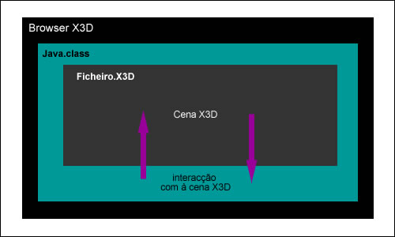

Este tipo de acesso é útil quando se pretende uma aplicação composta por duas janelas, uma janela referente à cena 3D e outra referente ao interface Java.
Neste tipo de acesso externo, a classe Java vai criar uma janela 3D e, de seguida, vai carregar a cena X3D para a janela 3D criada. Neste tipo de acesso é a própria aplicação Java que vai carregar o ficheiro X3D. Este modo de acesso é diferente do método de acesso interno. Enquanto que no acesso interno era o ficheiro X3D que ia chamar a classe Java, neste caso é a classe Java que vai carregar o ficheiro X3D.
Enviar eventos para a cena X3D
Modificar as coordenadas de um objecto da cena X3D (translação)
Modificar a orientação de um objecto da cena X3D (rotação)
Modificar a textura de um objecto
Mudar o viewpoint do utilizador
_______________________________________
Para carregar uma cena X3D para a aplicação Java é necessário, em primeiro lugar, importar o package org.web3d.x3d.sai, necessário para executar o SAI.
import org.web3d.x3d.sai.*; |
O passo seguinte é carregar a cena x3d. Para isso, na aplicação Java vai ser criado um componente que vai servir de browser X3D.
X3DComponent x3dComp =BrowserFactory.createX3DComponent(requestedParameters); |
Seguidamente é adicionada uma janela 3D à aplicação Java, criando um componente X3D usando a classe SAI BrowserFactory.
// Adicionar o componente ao interface |
Neste momento está criada uma janela 3D na aplicação. O passo seguinte consiste em carregar a cena X3D. Para tal é necessário aceder ao browser. Um browser em SAI é um interface que permite a interacção com a cena.
ExternalBrowser x3dBrowser = x3dComp.getBrowser(); |
O passo seguinte é carregar a cena para dentro do browser. A variável mainScene está definida como sendo a cena principal. Este método devolve um objecto X3D que tem encapsulada a cena X3D. Deve-se especificar o ficheiro X3D que pretendemos carregar, assim como a sua localização se este ficheiro não se encontrar na mesma directoria que a aplicação Java
X3DScene mainScene = x3dBrowser.createX3DFromURL(new String[] { "ficheiro.x3d" }); |
Falta agora substituir a cena actual pela cena carregada.
x3dBrowser.replaceWorld(mainScene); |
Depois de carregada a cena X3D já é possível através do Java manipular todos os objectos que fazem parte desta cena, enviando e recebendo eventos.
Pode ver-se na figura seguinte uma representação da filosofia do acesso externo.

Tal como na secção do acesso interno, também aqui se vai fazer referência a alguns exemplos, de maneira a haver uma melhor percepção da implementação do acesso externo.
Exemplo 1 - Enviar eventos para a cena X3D
Neste exemplo vai encontrar-se o material definido como “MAT” na cena X3D e vai mudar-se a sua cor para azul. Pode ver-se na a seguir um excerto do ficheiro que contém este objecto e a forma como este está declarado.
… |
Pode observar-se que o material do objecto está definido com o nome MAT e que o campo que guarda a cor deste objecto é o diffusecolor. Este campo possui o valor 1 0 0 (vermelho). O objectivo é passar este valor para 0 0 1 (azul).
A primeira coisa a fazer é encontrar na cena o nó chamado “MAT”. O método getNamedNode vai procurar o nó pretendido na cena principal e guardá-lo na variável material. Se este nó não for encontrado o valor retornado será null.
X3DNode material = mainScene.getNamedNode("MAT"); |
Depois de ter o nó pretendido é necessário encontrar o campo diffuseColor e mudar o seu valor. Para tal vai usar-se o método getField.
SFColor cor = (SFColor) material.getField("diffuseColor"); |
Uma vez que já se encontrou o campo pretendido pode-se agora mudar o seu valor. O novo valor deve ser do mesmo tipo do campo que pretendemos alterar. Sendo este campo um SFColor, tem de se utilizar uma variável float. Para tal cria-se uma variável com o nome de azul, e atribuir-se o respectivo valor (0 0 1), através do método setValue.
float[]azul = {0,0,1}; |
Neste momento o campo diffuseColor do nó MAT passou de vermelho para azul.
Exemplo 2 – Receber eventos da cena X3D
Uma aplicação usando o SAI pode escutar por mudanças em qualquer campo X3D. Isto permite à aplicação reagir em resposta a uma mudança que aconteceu no mundo X3D. Por exemplo, pode definir-se o programa para esperar que um sensor de toque seja activado, ou o avatar entre dentro de um sensor de proximidade, ou uma animação chegue ao seu último frame e quando isto aconteça executar uma determinada acção.
No exemplo que se vai usar, existe uma bola que possui um sensor de toque. Pretende-se que a aplicação reaja quando o utilizador pressione neste sensor e envie para a consola uma mensagem a dizer que a bola foi pressionada.
Existe um nó dad_Sphere1, que está dentro de um grupo dad_Group1. Neste grupo existe também um sensor de toque (Sensor1). Devido ao facto de o sensor de toque estar dentro do mesmo grupo do nó dad_Sphere1, estes dois nó vão estar interligados.
Vai usar-se para este exemplo o método addX3DEventListener, que vai fazer com que a aplicação esteja constantemente a escutar por alterações no campo pretendido do nó escolhido, que neste caso será o touchTime do nó Sensor1.
É também necessário implementar o interface X3DFieldEventListener, na definição da classe Java. Nesta função vão existir as acções a executar quando se detectar um evento no método addX3DEventListener.
Tal como foi feito para os exemplos anteriores, vai carregar-se o ficheiro X3D e seguidamente procurar o nó sensor de toque e o campo touchTime.
X3DScene mainScene = |
Agora que já temos o campo pretendido, basta utilizar o método addX3DEventListener e aplicá-lo a este campo. Desta maneira, quando houver alterações no campo touchTime contido na variável ttime, serão executadas as acções contidas na função readableFieldChanged.
ttime.addX3DEventListener(this); |
Este é um exemplo relativamente simples da aplicação desta técnica, porém ela possui muitas outras potencialidades, devido ao facto de se poder escutar alterações de todos os campos de todos os nós X3D e executar as mais variadas acções quando acontecem alterações dos valores respectivos.
Uma utilização bastante útil é a verificação de qual dos objectos presentes numa cena foi clicado. No entanto para isso é necessário também ter em consideração outros factores que se vão referir no seguinte exemplo.
Exemplo 3 - Diferenciar o objecto clicado
Um problema bastante comum é quando existem vários objectos numa cena 3D e se pretende saber em qual o utilizador clicou. Pode, por exemplo, pretender-se mudar as características de qualquer de um destes objectos (a cor por exemplo). A selecção deste objecto deve ser feita através do clique do rato, tendo em conta que cada objecto possui o seu próprio sensor de toque.
Se se tiver em conta o que foi explicado na secção anterior, o que se faria seria aplicar o método addX3DEventListener a cada objecto, para detectar quando o seu sensor de toque tinha sido clicado. Na função readableFieldChanged teríamos a acção necessária para modificar, por exemplo, a cor do objecto.
No entanto, tem de se pensar num processo para diferenciar qual o objecto que foi clicado, e diferenciar as acções a tomar dentro da função readableFieldChanged (uma acção para cada objecto).
Tal como no exemplo anterior vai associar-se o método addX3DEventListener ao campo touchTime de cada sensor de toque de cada objecto.
//sensor de toque do objecto 1 //sensor de toque do objecto 2 |
Desta maneira, cada vez que houver uma alteração no campo touchTime de cada um dos sensores, irão ser feitas as acções existentes na função readableFieldChanged, no entanto não há distinção sobre qual foi o objecto clicado.
Para que tal aconteça, é necessário definir duas novas variáveis que vão servir de controlo. Estas variáveis vão servir como forma de controlar mais tarde na função readableFieldChanged, qual o objecto clicado. Então é necessário utilizar o método setUserData e associar estas variáveis ao touchTime do sensor que pretendemos identificar. Neste exemplo, quando for gerado O touchTime do sensor 1 vai ser enviado o objecto EVENT1, e quando for gerado o touchTime do sensor 2 é enviado o objecto EVENT2.
public static final Object EVENT1 = new Integer(0); |
Desta maneira existe um valor associado a um determinado objecto, que se vai enviar para a função readableFieldChanged. Nesta função vai desencapsular-se o objecto enviado e guardá-lo na variável udata.
public void readableFieldChanged(X3DFieldEvent evt) { |
Pode ver-se, no código, que se o valor da variável udata for igual ao EVENT1 (0), fica-se a saber que foi clicado o sensor do objecto 1. Se por outro lado o valor da variável udata for igual ao valor do objecto EVENT2 (1) então o sensor que foi clicado foi o sensor do objecto 2. Através deste processo é possível distinguir qual o objecto de uma cena que foi clicado e fazer a sua distinção na função readableFieldChanged.
Exemplo 4 - Modificar as coordenadas de um objecto na cena X3D (translação)
Neste exemplo vai procurar-se na cena X3D um objecto de nome “dad_Box1” e mudar as suas coordenadas. Para modificar as coordenadas do objecto é necessário alterar os valores do campo translation. Tal como no exemplo anterior também aqui teremos de aceder a um campo de um nó e alterar os seus valores.
Depois de encontrado o nó pretendido (dad_Box1) e o campo a alterar (translation), vai proceder-se à sua alteração.Será definida uma variável com as novas coordenadas.De seguida procede-se à atribuição destes novos valores ao campo respectivo. Desta maneira, com estes novos valores do campo translation, o objecto vai deslocar-se da posição original para a posição final (2 0 2).
X3DNode objecto = mainScene.getNamedNode("dad_Box1"); |
Exemplo 5 - Modificar a orientação de um objecto na cena x3d (rotação)
Este exemplo é bastante parecido com o anterior, mudando o facto de em vez de se alterar o campo translation, se altere o campo rotation. Assim e tendo como base o mesmo exemplo do objecto x3d vai localizar-se o nó pretendido, ou seja, o “dad_Box1” e de seguida procurar o campo a alterar (rotation). De seguida procede-se à alteração para os valores pretendidos, como se pode ver a seguir.
X3DNode objecto = mainScene.getNamedNode("dad_Box1"); |
Existe um pormenor que é necessário realçar. São quatro os valores contidos no campo rotation, sendo os três primeiros a orientação segundo a qual o objecto vai rodar, ou seja, x, y ou z. O quarto valor é o ângulo em graus da rotação pretendida. Neste caso específico, o objecto vai rodar segundo o eixo dos y, 90 graus.
Exemplo 6 - Modificar a textura de um objecto
Neste exemplo vai proceder-se à alteração da textura de um objecto de uma cena X3D. De seguida pode ver-se o codigo referente a um objecto X3D com uma textura aplicada.
… |
Para alterar esta textura basta aceder ao campo ImageTexture definido por tex e ao campo url, alterando de seguida o seu valor.
Tem de se definir uma variável para guardar o array que vai definir o caminho para a nova imagem que vai constituir a textura, pois o campo url de uma textura é do tipo MFString. Finalmente basta atribuir essa matriz ao campo url.
X3DNode textura = mainScene.getNamedNode("tex"); |
É de realçar a utilização do método set1Value para atribuir este novo valor ao campo url. Isto devido ao facto de se tratar de um array. Este método utilizar dois valores. O primeiro é o índice do array onde vai ser introduzido o valor para a nova url. O segundo valor é a string que corresponde ao novo valor da url da nova imagem que vai servir de textura.
Exemplo 7 - Mudar Viewpoint do utilizador
Neste exemplo vai explicar-se como fazer para modificar o viewpoint actual do utilizador. Para isso deve haver pelo menos dois nós viewpoint na cena X3D, tal como se pode ver no exemplo seguinte. Um deles é o viewpoint actual (Viewpoint1). O objectivo é mudar do Vewpoint1 para o Viewpoint2, que está noutra localização da cena X3D.
<Viewpoint DEF='Viewpoint2' |
Esta alteração é relativamente simples. Tal como em todos os exemplos anteriores, é necessário aceder ao nó, ao qual pertence o campo onde é necessário fazer a alteração. Neste caso esse nó é o 'Viewpoint2, que é o Viewpoint que pretendemos activar.
Agora basta aceder ao campo set_bind, que possui o valor false. Este valor deve passar para true, de maneira a activar o Viewpoint.
X3DNode view2= mainScene.getNamedNode("Viewpoint2); |
Desta maneira o utilizador é deslocado do local onde se encontra o Vewpoint1 para a localização do Vewpoint2.
Nesta parte vai demonstrar-se como criar novos nós dinamicamente, ou seja, em vez de abrir um ficheiro X3D pode criar-se toda a cena nó a nó. No próximo exemplo vai ser criado um cubo. Neste caso especifico não existe nenhum ficheiro x3d, ou seja, vai criar-se toda a cena de raiz. Mais a frente vai exemplificar-se um exemplo em que o ficheiro x3d já existe, mas onde também é possível criar nós dinamicamente.
Em primeiro lugar vai criar-se dinamicamente uma cena X3D. Cada cena X3D deve ter declarado que profile e que componentes vai usar. Deve ter-se em conta que o browser pode não suportar o profile pretendido, podendo desencadear uma excepção (NotSupportedException). Neste exemplo o programa vai parar se o profile Immersive não for suportado pelo browser. A cena propriamente dita vai ser criada com o método createScene. Este método cria uma cena vazia.
ProfileInfo profile = null; |
Pode-se então agora começar a criar os nós e adiciona-los à cena. Usa-se para isso o método createNode. Pode-se ver a seguir a criação de um nó de Shape, um cubo (box). Depois de criado o cubo, este é definido como geometria da Shape. A Shape é então adicionada à raiz da recentemente criada cena X3D.
X3DNode shape = mainScene.createNode("Shape"); |
Por outro lado podemos criar objectos numa cena X3D já existente, bastando para isso em vez de criar a cena, abrir uma já criada, tal como tínhamos feito para os exemplos anteriores. Depois disto basta criar os objectos pretendidos
Exemplo 9 - Adicionar uma route
As routes em X3D servem como meio de enviar mensagens para os nós. Um exemplo de routes são as ligações existentes entre um interpolador de uma animação e o objecto que se pretende mover. Como exemplo para uma animação podemos ter um sensor de toque associado a um objecto. O touchTime do sensor de toque está ligado ao startTime do relógio da animação. O fraction_changed do relógio está ligado ao set_fraction do interpolador de posição. O value_changed do interpolador de posição está ligado às coordenadas do objecto que pretendemos animar. Todas estas ligações são routes e enviam valores de uns nós para outros.
No exemplo seguinte vai demonstrar-se como criar routes dinamicamente, de maneira a iniciar uma animação de um objecto tal como foi descrito.
Vai usar-se o método visto anteriormente para escutar mudanças num campo, ou seja, o objecto que vai ser animado possui um sensor de toque. O touchTime do sensor de toque está associado a um método addX3DEventListener. Quando o utilizador clica no sensor de toque, o campo touchTime vai sofrer uma alteração, accionando a acção que se encontra na função readableFieldChanged. Esta acção será a criação das routes necessárias para a animação do objecto.
X3DScene mainScene = x3dBrowser.createX3DFromURL(new String[] { "bola.x3d" }); // Encontar o sensor de toque - Sensor1 |
Neste momento vai passar-se à construção da função readableFieldChanged. Depois de se encontrarem na cena X3D todos os campos necessários para iniciar a animação do objecto, ou seja, o sensor de toque, o interpolador de posição e o objecto que pretendemos animar pode procede-se a criação das respectivas routes com o método addRoute.
Como se pode ver nas duas ultimas linhas da função readableFieldChanged, foram criadas ligações entre o sensor de tempo (campo fraction_changed) e o interpolador de posição (campo set_fraction). De seguida foi criada uma ligação entre o interpolador de posição( campo value_changed) e o objecto que se pretende animar (campo translaction). Desta maneira quando o utilizador clicar no objecto a animação definida no interpolador de posição será iniciada.
Um proto (protótipo) é um tipo de nó diferente, que funciona como biblioteca de objectos que podem ser utilizados numa cena X3D. A técnica descrita na secção que explicava como criar nós dinamicamente, estes nós eram simplesmente nós existentes no X3D, como cubos ou esferas. Com os protos, é possível a modelação de objectos que vão ser guardados num ficheiro. Este objectos unicamente vão ser visíveis quando aplicados a uma cena X3D, através da criação de uma instancia. Pode por isso criar-se uma biblioteca de objecto complexos que se poderão utilizar na criação dinâmica de um mundo X3D.
Isto é bastante útil na medida que se podem criar tantas instâncias quantas as desejadas destes objectos, assim como modificar as suas características dinamicamente.
Existem dois tipos de protos, os externos (externProtos) e os internos. Os externos podem ser chamados a partir de um ficheiro onde estejam “armazenados” para outro ficheiro onde se crie a sua instância.
Os protos internos devem estar declarados no mesmo ficheiro onde vão ser instanciados. Neste projecto apenas se vão usar e referir protos internos. Cada proto pode ter definido um interface onde vão estar declarados todos os nós susceptíveis de serem acedidos pela programação externa.
Nesta secção vai ser explicado como fazer para usar um proto utilizando o SAI, assim como modificar as características de um objecto definido dentro desse protótipo.
Criação de um proto e respectiva instancia
Para criar um proto em primeiro lugar deve-se criar a declaração do proto, onde vai estar a sua representação como se pode ver a seguir.
<ProtoDeclare name='Caixa'> |
Esta declaração do proto deve ser feita dentro das tasgs que definem a cena actual.
Se o ficheiro x3d unicamente tiver a declaração de um proto tal como foi feito anteriormente, ao executar este ficheiro no browser o utilizador não vai visualizar nada, embora se possa ver na declaração do proto a definição de um cubo. Para que um proto possa ser visualizado existe a necessidade de criar uma instância deste proto. Podemos ver a seguir a declaração da instância para o proto definido anteriormente:
<ProtoInstance name='Caixa'/>
Neste momento ao executar o ficheiro x3d já será possível visualizar a representação do cubo definido no proto.
Até agora não se recorreu ao Java, a criação da instância do proto foi feita dentro do mesmo ficheiro x3d onde existe a declaração do mesmo.
Vai agora ver-se uma maneira de criar uma instância de um proto dinamicamente, ou seja, usando o SAI. Em primeiro ligar deve ser criada a declaração do proto no ficheiro x3d especifico. Seguidamente, em vez de criar a instância do proto dentro do mesmo ficheiro, faz-se isso através do Java, associando esta acção por exemplo a um botão.
Primeiro deve-se aceder ao ficheiro x3d onde existe a declaração do proto (Proto.x3d). De seguida acede-se à declaração do proto e cria-se a instância do proto através do método addRootNode.
mainScene = x3dBrowser.createX3DFromURL(new String[] { "Proto.x3d" }); |
Depois de feito isto a representação do objecto definido no proto irá aparecer de imediato na cena x3d.
Nesta fase já se sabe como criar uma instância de um proto dinamicamente. Os protos são úteis na medida que se pode ter uma “biblioteca” de objectos dentro de um ficheiro x3d e controlar dinamicamente o aparecimento desses objectos numa cena. No entanto, tal como o proto declarado, não é possível aceder aos campos dos nós existentes dentro do proto, ou seja, não seria possível aplicar nenhum dos exemplos de acesso e modificação dos campos de um objecto x3d descritos nos exemplos anteriores. Para alterar esta situação é necessário fazer algumas modificações.
Acesso aos campos dos nós de um protótipo
Para se poder aceder aos campos dos nós existentes dentro de um proto existe a necessidade de se fazer algumas alterações. Em primeiro lugar é necessário a declaração de uma interface dentro da declaração do proto. Nesta interface vão ser definidos todos os nós aos quais se pretende ter acesso usando o SAI. Para o proto actual pretende aceder-se e modificar a cor do cubo contido no proto. Desta maneira vai definir-se uma variável (Cor) com um valor que vai ser o valor inicial do cubo mal seja criada a instância do proto.
<ProtoInterface> |
Esta variável, Cor, é a variável que vai ser acedida pela classe Java para se proceder à alteração da cor do objecto. Dentro do corpo do proto, no local exacto onde deve ser feita a especificação do material do objecto do proto vai ser feita a ligação com a variável Cor definida anteriormente. Desta maneira, quando se cria a instancia do proto o material do objecto vai se definido pelos valores contido na variável Cor.
<Material> |
Depois de feitas estas alterações é então possível aceder ao campo diffuseColor deste objecto e modificar os seus valores, tal como se pode ver a seguir.
Depois de se clicar no botão que cria a instância do proto, a representação do cubo torna-se visível .
Para modificar a cor do objecto acede-se à variável Cor que foi definida na interface criada na declaração do proto e de seguida já é possivel mudar o seu valor para a cor pretendida.
//modificação da cor do cubo |
Neste momento acabou de se mudar a cor de um objecto contido num proto. A partir deste momento será possível aceder e alterar as outras características dos campos tal como se viu para os exemplos explicados anteriormente.
O nó Audioclip possui dois campos que se deve ter em conta para iniciar a reprodução de um som, o startTime e o stopTime. Enquanto o som não estiver a ser reproduzido ambos possuem o valor zero. Para activar um som basta que o startTime seja maior que o stopTime, pelo que basta simplesmente passar o valor do startTime para 1, como se pode ver a seguir.
X3DNode som= mainScene.getNamedNode("AClip_nome_do_som"); |